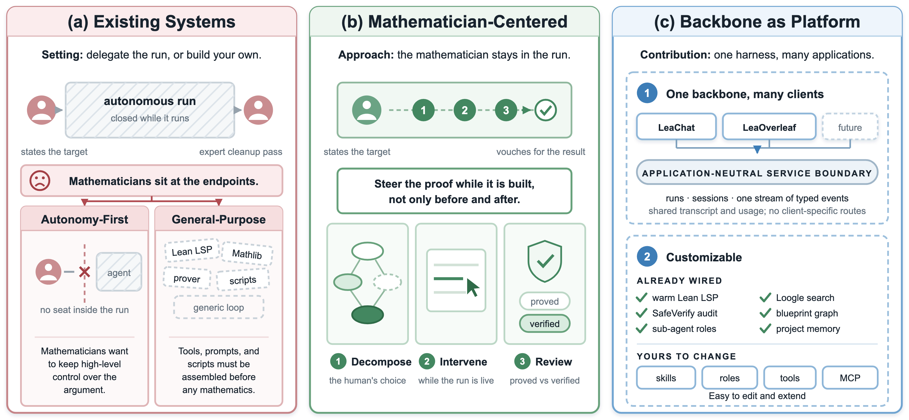
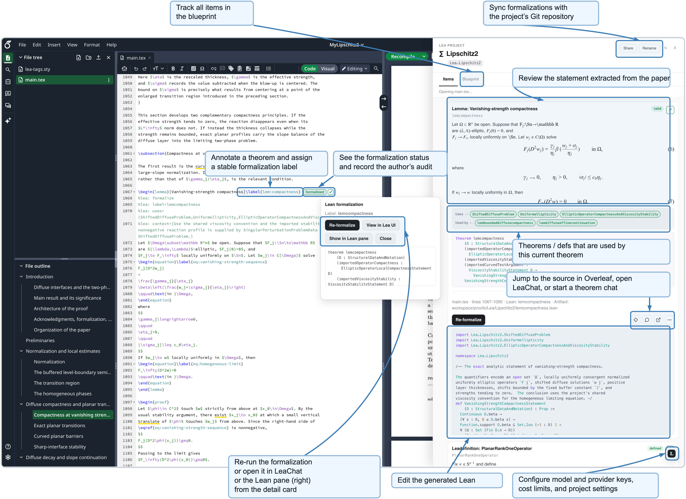
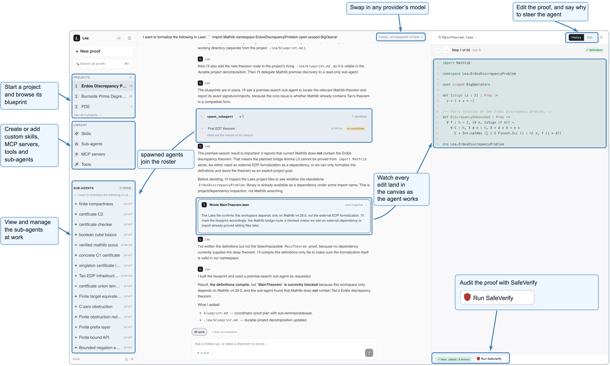

Builds an open-source Lean-specific agent backbone with LSP, Loogle, blueprints and SafeVerify, and uses it to formalize the Durfee square generating function from Mathlib.
Abstract
Agentic systems now formalize research-level mathematics in Lean, but they are built for autonomy: the mathematician states a target and inspects a result. The alternative, a general-purpose coding harness, is domain-neutral and must be assembled into a formalization workspace before any mathematics begins. Mathematicians, however, report wanting to keep high-level control over how an argument is decomposed and established. We present $\textbf{Lea}$, a Lean-specific agent backbone for mathematician-facing software rather than a single interface. Lea exposes runs, sessions, and typed events through one application-neutral API, and ships with Lean tooling (blueprints, LSP, Loogle, SafeVerify) already wired. We report two applications built on it: $\textbf{LeaChat}$, a web client for interactive proof authoring, and $\textbf{LeaOverleaf}$, which formalizes theorems annotated directly in an Overleaf document; a session begun in either continues in the other. In a case study, a mathematician outlined a proof of the Durfee square generating function in a few natural-language messages, and Lea produced a complete Lean development from Mathlib alone, following the intended decomposition closely and requiring substantive correction at a single point. Lea and both applications are released as open source so that further mathematician-facing tools can be built on the same backbone.
Problem
Existing agentic Lean formalization systems are built for autonomy, so the mathematician only states targets and inspects results. Surveyed mathematicians instead want to keep high-level control over how an argument is decomposed while delegating the mechanical work.
Approach
Lea is a backend that runs formalization agents through an application-neutral HTTP API exposing runs, sessions, and typed events. It provides a persistent blueprint dependency graph, concurrent sub-agents with roles declared in YAML, and a persistent Lean language server. It distinguishes proofs that are formalized (elaborate without sorry) from proofs that are verified (also pass SafeVerify kernel replay and an axiom whitelist). Two clients are built on it: LeaChat, which allows interactive mid-run intervention, and LeaOverleaf, which formalizes theorems annotated in an Overleaf document.

Figure 1: (a) Existing systems are autonomy-first provers or general-purpose harnesses. (b) Lea makes the run itself the surface the mathematician acts on. (c) One application-neutral service boundary carries every client; Lean tooling ships wired, while skills, sub-agent roles, tools, and MCP servers remain user-editable.

Figure 2: The LeaOverleaf interface. Left: an Overleaf document whose L a T e X source contains Lea annotations that identify a theorem, dependencies, and audit status. Center: the item detail card, from which the author can rerun the formalization, continue it in LeaChat, or open it in the Lean pane. Right: the Lean pane, which organizes annotated items as a blueprint, displays the statement extr
Results
In a case study using GPT-5.5, a mathematician outlined the proof in colloquial chat, and Lea produced a complete Lean proof of the Durfee square generating function identity from Mathlib alone. The work spanned three sessions, 38 sub-agent invocations, and 28 mathematician messages, with one point needing substantive correction. The output still needs stylistic clean-up before it would meet Mathlib's standards.

Figure 3: The LeaChat interface. Left: projects and their blueprints, the user-editable library of skills, sub-agent roles, tools, and MCP servers, and the roster of sub-agents spawned in the session. Center: the run transcript, where the agent’s reasoning, tool calls, and file writes appear as they happen. Right: the Lean canvas, which shows each edit as it lands, stays editable mid-run, and repo